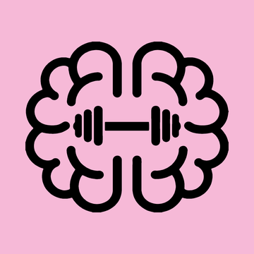

Questions, ideas or a problem with the app? Write us.
We usually answer within a few days. · Wir antworten meist innert weniger Tage.
Only on your iPhone. There is no account and no cloud. See the privacy policy.
Yes, with an iCloud or computer backup of your iPhone: restore the backup on the new device and the app's data comes with it.
In the app, open the settings (gear icon) and reset. This deletes everything on the device.
Check that reminders are on in the app's settings and that notifications are allowed for the app in iOS Settings › Notifications.
In the app's settings you can switch between English and German.
No. The app is a tool for building habits and self-belief, not a substitute for professional help. If you are in crisis, please contact your local emergency number or a helpline – in Switzerland: Die Dargebotene Hand, 143.
Nur auf deinem iPhone. Es gibt kein Konto und keine Cloud. Siehe Datenschutzerklärung.
Ja, über ein iCloud- oder Computer-Backup deines iPhones: Stell das Backup auf dem neuen Gerät wieder her, dann sind die Daten der App dabei.
Öffne in der App die Einstellungen (Zahnrad) und setze alles zurück. Dabei wird alles auf dem Gerät gelöscht.
Prüfe, ob die Erinnerungen in den Einstellungen der App eingeschaltet sind und ob Mitteilungen für die App in den iOS-Einstellungen › Mitteilungen erlaubt sind.
In den Einstellungen der App kannst du zwischen Deutsch und Englisch wechseln.
Nein. Die App ist ein Werkzeug, um Gewohnheiten und Selbstvertrauen aufzubauen, und kein Ersatz für professionelle Hilfe. In einer Krise wende dich bitte an den Notruf oder eine Hilfsstelle – in der Schweiz: Die Dargebotene Hand, 143.